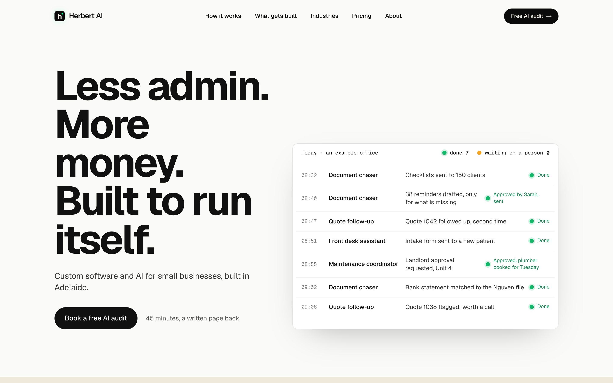

Hero tweak: bigger board
Today the board takes a little over half the width beside the headline. Each option gives the product more room. Phones stack the same way in all three.

TodayWhat the preview branch shows now, for comparison. Not an option.
1. WiderSame layout, the board takes about 60 percent and the headline steps down slightly. The smallest change.
2. Full width under the headlineThe headline on the left with the sub-line and button beside it, the board across the whole page below. The most room for each job’s words, and still all in the first screen. Recommended.
3. Off the edgeThe board larger and running off the right edge of the screen, cut by it. The product-shot move: it says there is more than fits. Loses the status column on smaller laptops.